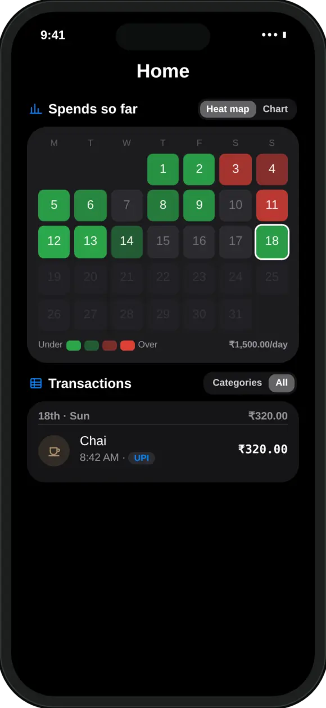
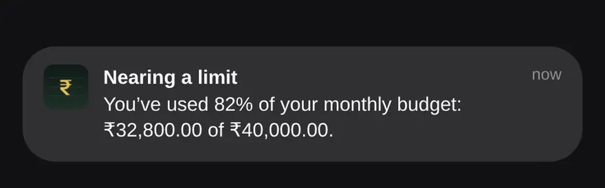

Why use a daily spending limit instead of a monthly budget?
Because you make spending decisions one day at a time. A monthly number is too big to compare against a ₹400 dinner. A daily number is not.
Most months do not go wrong with one big purchase. They go wrong with a lot of small, reasonable ones in the first two weeks. A daily figure shows you early, while there is still most of the month left to adjust.
How do I work out a daily spending limit from my salary?
Subtract fixed costs and savings from your take-home pay, then divide what is left by the days in the month. Four steps:
- Start with take-home pay. The amount that actually reaches your bank account, after tax and deductions, not your CTC.
- Subtract fixed costs and savings. Rent, EMIs, electricity and phone bills, subscriptions, and the amount you save or invest each month, such as SIPs. Pay yourself first by treating savings as a fixed cost.
- Divide by the days in the month. What remains is your flexible money: food, travel, shopping, outings. Divide it by 30 or 31.
- Recalculate as you spend. Each day, take what is left of the flexible money and divide it by the days remaining. That is what is safe to spend per day from here.
What does that look like with real numbers?
On a ₹50,000 take-home salary with ₹31,000 of fixed costs and savings, the daily limit is about ₹613 in a 31-day month.
| Item | Per month |
|---|---|
| Take-home salary | ₹50,000 |
| Rent | − ₹15,000 |
| EMI | − ₹8,000 |
| Bills and subscriptions | − ₹3,000 |
| SIP (savings) | − ₹5,000 |
| Flexible spending money | ₹19,000 |
| Daily limit (÷ 31 days) | about ₹613 |
Your numbers will be different, and that is the point. The method stays the same whatever you earn: everything that is already committed comes out first, and only the rest is spread across the days.
If you want help deciding how much should go to savings in the first place, a common starting point is the 50/30/20 split: roughly half for needs, 30% for wants and 20% for savings. Treat it as a place to start, not a rule.
How do I keep the daily limit accurate during the month?
Divide what is left of your flexible money by the days remaining, every day. This is what “safe to spend per day” means.
Say it is 12 October and you have spent ₹9,500 of your ₹19,000. There are 19 days left in the month, so you can spend ₹9,500 ÷ 19 = ₹500 a day and still finish on budget.
Overspend one day and the number for the rest of the month dips a little. Have a quiet day and it rises. Either way, you always know where you stand, without starting the budget again.

How do I set this up in MoneyOS?
Set a monthly limit in Manage, then log your spending. Home shows what is safe to spend per day, updated every time you add an expense.
- Monthly limit. In Manage, under Limits, set your monthly limit to the amount you will log as spending. If you log rent and bills in MoneyOS too, include them in the limit.
- Safe to spend per day. MoneyOS works it out as your monthly limit minus what you have spent so far, divided by the days left in the month, exactly the formula above.
- Daily limit. You can also set a fixed daily limit, and limits per category or per card.
- Alerts. You get a notification at 80% of a limit and again at 100%.
- Heat map. Each day of the month turns green when you stay under your daily pace and red when you go over.
- Salary allocator. On Home, open Planning, then Salary allocator, to try a needs, wants and savings split against your take-home pay. It changes nothing in your ledger.

SIPs and other investments are tracked but do not count as spending, so saving more never shows up as overspending. Getting your spending in is quick too: see how to import UPI payments with screenshots or see where your Google Pay and PhonePe money went. For a tour of the whole app, read our introduction to MoneyOS, and for how your data is handled, see our privacy policy.
Frequently asked questions
How do I calculate how much I can spend per day?
Take your monthly take-home pay, subtract fixed costs such as rent, EMIs and bills, and subtract what you plan to save. Divide what is left by the number of days in the month. As the month goes on, divide what is left of that amount by the days remaining.
What is safe to spend per day?
It is the amount you can spend each remaining day and still finish the month within your limit. MoneyOS works it out as your monthly limit minus what you have spent so far, divided by the days left in the month.
Should I use a daily limit or a monthly limit?
Both work well together. A monthly limit keeps the big picture on track, and the daily figure tells you what that means today. MoneyOS lets you set a monthly limit, a daily limit, or both, and alerts you at 80% and 100%.
What if I overspend one day?
Nothing breaks. The safe-to-spend figure for the remaining days simply goes down a little, so the month can still finish within your limit. A quiet day afterwards brings it back up.
Do SIPs count towards my daily spending?
Take your SIP out of the flexible amount before you divide. In MoneyOS, SIPs and other investments are tracked but do not count as spending, so they do not eat into your daily figure.
Is MoneyOS free?
Yes. The whole app is free, with no subscription, no ads and no in-app purchases.